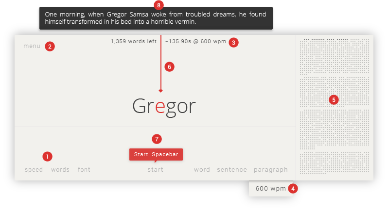

Thanks for using Speedr! I hope it is as productive for you as it is for me.
If you have any suggestions or bugs to report, I would love to hear about it here.
Speedr is constantly being updated, join the mailing list to be notified of new features and changes.
There are three ways to read using Speedr: through a keyboard shortcut, through the right-click context menu, or with the Speedr extension.
Select the text you would like to read and activate Speedr (Default: Alt + V). To begin reading, toggle Speedr (Default: Spacebar).
Select the text you would like to read and right-click on the selection. Under the "Speedr" menu, you may "Read selected text" to open Speedr. Alternatively, you may "Read selected text and start" to open Speedr and begin reading automatically.
Select the text you would like to read and click the Speedr icon to the right of the address bar. Click "Read selected text" to open Speedr. Note: If Speedr is already open, it will begin reading.
One of the great features of Speedr is the wide array of customizations that allow you to dictate not only the look but the behavior of Speedr. Give Speedr a minimal, clutter-free interface. Use a serif font instead of a sans-serif. Or have it slightly pause when there's punctuation. Or have it stop at the end of every paragraph. Whatever your needs, you have the power to tailor Speedr to maximize your own productivity. Go to the settings page for the full list of options.
A unique feature of Speedr is the ability to navigate text intelligently. You can easily navigate between words (Default: ←, →), sentences (Default: Shift + ←, Shift + →), and paragraphs (Default: Ctrl + ←, Ctrl + →) with a quick shortcut or the click of a button.
Speedr includes many add ons to enhance and customize its looks and functionality. Add ons can be easily toggled on and off in the settings. Note: All actions can still be triggered via keyboard shortcuts, even if the add on has been disabled.
Shows the buttons that trigger Speedr's core actions
Shows the button to open the menu
Shows the number of words left in the text with the estimated reading time remaining
Displays the current words per minute you are reading at
Displays a minimap to give you an idea of where you are in the text.
Provides a countdown before starting Speedr. This gives you a window to mentally prepare yourself before you start reading. Disabling this will make Speedr begin instantly after pressing 'Start'.
Hover over actions to show tooltips. A tooltip consists of a short description of the action and its accompanying keyboard shortcut. Useful for when you are still trying to learn the shortcuts.
When paused, hover over the word to display the sentence of the current word. Helpful when you've missed a beat and forgotten the context of what you were reading.